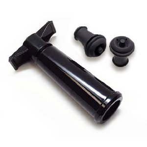
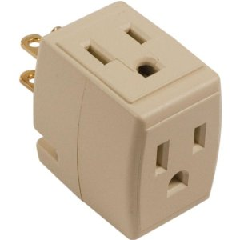
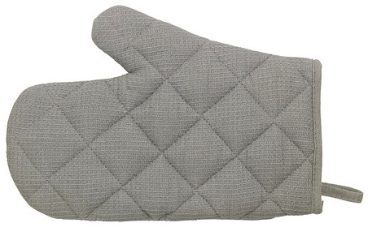
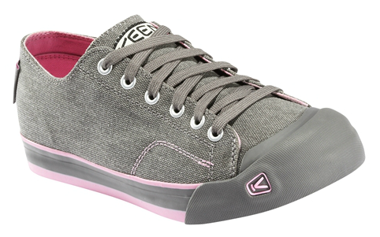
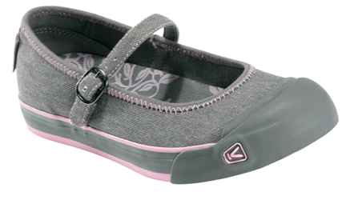
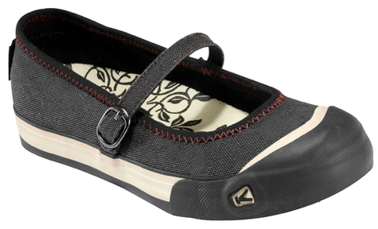
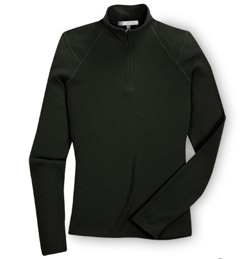

present ideas
- Anthro Additional Shelf 36" black -
so I can put my scanner & printer below my desk, so handy
(You might be able to pick it up at their warehouse in Tualatin instead of paying for shipping.)
Have to call them at 503-691-2556 to order.
- Wine vacuum sealer  New Seasons
- a triple power cube such as this one 
- 2 Pot holders/oven mitts: I like the Ikea
IRIS oven mitt, or the
IRIS pot holder 
- I believe Mom knows how to make these (or buy them!)
- Aeropress - was recommended as a good coffeemaker
- coffee - I believe that Morgan knows how to make this
- 2-tier bamboo shoe rack -
can be found at the Storables store downtown

- Keen Shoes:
Coronado (non-Mary Janes), size 7.5, gargoyle/lilac

- I already bought these because I found them on sale. I haven't opened them, you can buy them for me!
Keen Shoes: Coronado Mary Janes grey $30 
Keen Shoes: Coronado Mary Janes black $46 
Ibex Shak Jersey black $72 
- Cast iron frying pan, or maybe someone can season my old one? I tried but didn't like the results
- recommended wine, cider, beer, for when I have people over
I liked the taste I had of J.K.'s Winterruption (formerly known as J.K.'s Winter Solstice)

- TriMet Adult 2-Zone 10-Ticket Book, New Seasons etc sells them

Gift Certificates